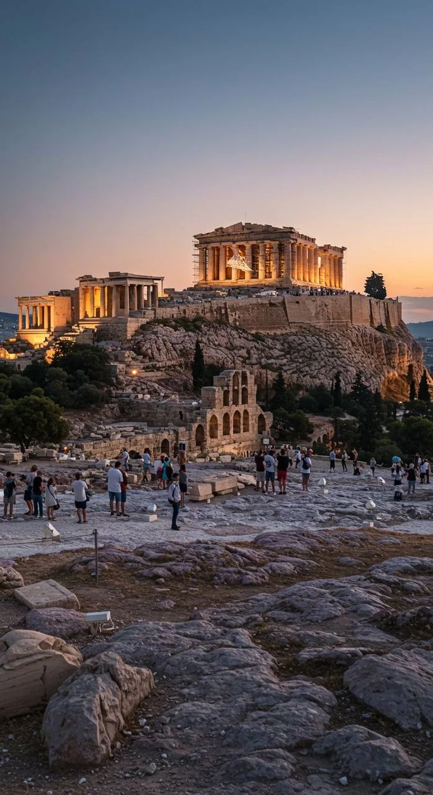

GREECE • HISTORY • MEDITERRANEAN
The historic capital of Greece, where ancient civilization meets modern entrepreneurship, tourism and Mediterranean living.
Athens is one of the world's oldest continuously inhabited cities and remains a major cultural, political and economic center in Southeastern Europe. Known as the birthplace of democracy and philosophy, the city continues to attract entrepreneurs, investors, students and travelers from around the world.
Its strategic location between Europe, the Middle East and North Africa makes Athens an important regional hub for business, logistics and tourism.
Entrepreneurship, services and regional trade.
Historic landmarks and global attractions.
Housing, transport and Mediterranean lifestyle.
Property investment and relocation options.
History, museums and local experiences.
Emerging sectors and growth opportunities.
Athens has influenced philosophy, politics, architecture and science for thousands of years. Today, the city remains a major destination for international visitors and an increasingly attractive location for startups and remote professionals.
Its blend of history, affordability and quality of life continues drawing people seeking both opportunity and culture.
Major sectors include tourism, shipping, finance, logistics, technology, education, real estate, hospitality and professional services.
Athens benefits from Greece's strong maritime sector and growing role in regional commerce and investment.
Popular destinations include the Acropolis, Parthenon, Acropolis Museum, Plaka, Monastiraki, Syntagma Square, Temple of Olympian Zeus and the Athens Riviera.
The city offers an exceptional combination of ancient history, modern culture, Mediterranean cuisine and vibrant urban life.
Athens continues investing in technology, tourism infrastructure, transportation and urban renewal projects. Its growing startup ecosystem and international connectivity are helping shape a new chapter of economic development.
The city remains one of the Mediterranean's most important gateways for business, culture and opportunity.